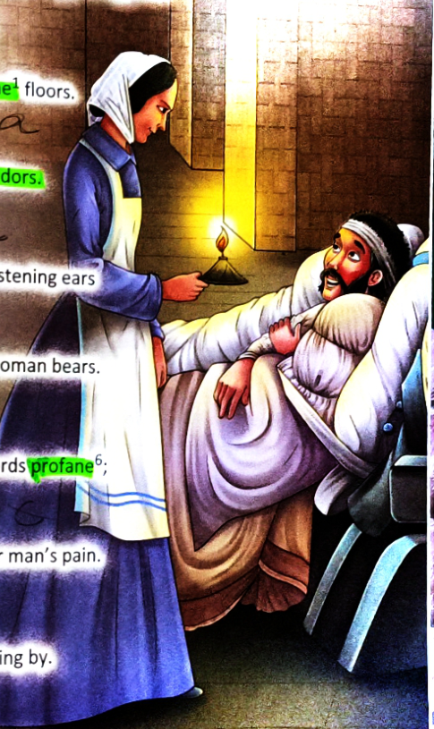
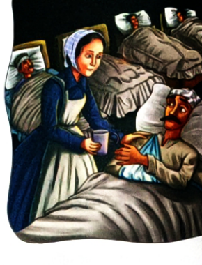

Walk through the darksome, dismal military hospital corridors of the Crimean War with Florence Nightingale. In this luminous 6-stanza lyric, renowned 19th-century American poet Emma Lazarus immortalizes the selfless compassion of "The Lady with the Lamp", exploring how true heroism requires no monument of cold stone, but is graven forever upon human hearts.
During the Crimean War (1853–1856), British soldiers wounded on bloody battlefields were transported across the Black Sea to the Barrack Hospital at Scutari (modern-day Istanbul, Turkey). The wards were rat-infested, filthy, freezing, and lacked basic medicines or clean water. More men died of typhus, cholera, and dysentery than from battle wounds.
Defying Victorian social expectations that wealthy women should stay at home, 34-year-old Florence Nightingale organized a corps of 38 nurses to travel to the war zone. At night, after all the doctors had retired, she walked through four miles of darkened hospital corridors carrying a small Turkish oil lamp to comfort the dying. Soldiers kissed her shadow as she passed.


Emma Lazarus was an influential 19th-century American poet, essayist, and humanitarian activist born in New York City. She is best known across the world for her immortal sonnet "The New Colossus" (1883), which is engraved on a bronze plaque mounted inside the pedestal of the Statue of Liberty in New York Harbour:
"Give me your tired, your poor,
Your huddled masses yearning to breathe free,
The wretched refuse of your teeming shore.
Send these, the homeless, tempest-tost to me,
I lift my lamp beside the golden door!"
Like Florence Nightingale lifting her lamp in the darkness of Scutari, Emma Lazarus celebrated figures whose compassionate light guided the suffering and displaced.
Contrasting imagery consists of poetic descriptions that oppose each other to heighten emotional impact. In Florence Nightingale, Emma Lazarus masterfully contrasts the grim, disease-ridden atmosphere of the Crimean war hospital with the luminous, divine warmth brought by Florence:
| Images with Positive Suggestion | Images with Negative Suggestion |
|---|---|
| A soft, angelic smile Shows her pure, calming benevolence. |
The dismal corridors Reflects the dreary, endless rows of sickbeds. |
| Whitewashed walls Suggests cleanliness, light, and clinical hope. |
Darksome floors Evokes shadowy, grime-filled hospital conditions. |
| Lighteth her face Luminous radiance of her lamp and spirit. |
Agony and gloom The visceral suffering and hopelessness of war. |
| Whose tenderness this woman bears Gentle bedside healing and soothing touch. |
Fretful murmurs, words profane Curses, groans, and complaints of wounded men. |
| All words are hushed save prayer Transforms a deathward into a sacred temple. |
Most plaintive tale of sad nightingale Melancholic songs of tragedy and loss. |
| Sainted brow & Storied page Reverence and eternal historical immortality. |
Fall back content to die The grim reality of mortality on the front lines. |
Use of ancient Elizabethan verb inflections: walketh (walks), lighteth (lights up), standeth (stands), and flits for aye (disappears forever) to grant the poem timeless solemnity.
"She seems God’s angel weeping o’er man’s pain." Directly identifies Florence with a divine angel. Also plays on her surname: "nightingale"—the bird of nocturnal song.
Using a part to represent the whole: "listening ears" represents the wounded soldiers, "sainted brow" represents Florence’s noble persona, and "quivering lids" represents grieving eyes.
Repetition of consonant sounds creates melodic flow: "whitewashed walls" (/w/), "woman walketh" (/w/), "most plaintive... name and tenderness".
Textbook prompt: "A real-life hero is a person who contributes to making our lives more convenient. It could be a teacher, sweeper, plumber, driver, nurse, etc."
Wake up before dawn to keep our streets clean, preventing deadly epidemics like cholera and dengue from spreading.
Work 12-hour night shifts monitoring oxygen, administering medication, and comforting distressed patients.
Safely navigate chaotic traffic and monsoons every day to ensure thousands of schoolchildren return home safely.
Dedicate their lives to dispelling ignorance and igniting curiosity in young minds, shaping the future of our republic.
Design and award a virtual Gold Medal to an everyday hero in Pushti's school or community:
Florence Nightingale is celebrated not only for her gentle bedside bedside manner, but as a brilliant mathematician, statistician, and hospital architect who permanently revolutionized public health:
She invented the Polar Area Diagram (also known as the Nightingale Rose diagram) to visually prove to the British Parliament that poor sanitation and lack of clean water—not battle injuries—were killing 80% of soldiers. She was the first female member of the Royal Statistical Society.
Nightingale mandated rigorous handwashing, boiling hospital linens, clearing blocked sewer pipes, and opening windows for fresh air. In six months at Scutari, the mortality rate plummeted from 42% to 2%!
In 1860, she established the world's first professional nursing training school at St. Thomas' Hospital in London, elevating nursing from disreputable menial labor to a highly respected, scientifically rigorous medical profession.
Between 1858 and 1890, Florence Nightingale focused extensively on public health in India. She collaborated with British officials and Indian reform committees to build sanitary drainage systems in Indian villages, draft irrigation policies to avert famines, and improve sanitation in the Indian Army.
Established by the Ministry of Health and Family Welfare, Government of India, the prestigious National Florence Nightingale Award is conferred annually by the President of India at Rashtrapati Bhavan to honor exemplary Indian nurses, midwives, and lady health visitors for their selfless devotion and meritorious healthcare service.
🎉 Congratulations, Pushti! With the completion of Unit 3, Chapter 3: Florence Nightingale, all 9 chapters across Unit 1 (Where Learning Begins), Unit 2 (Wanderlust), and Unit 3 (Real-Life Heroes) are now 100% digitized, interactive, and live on Pushti Study Hub!